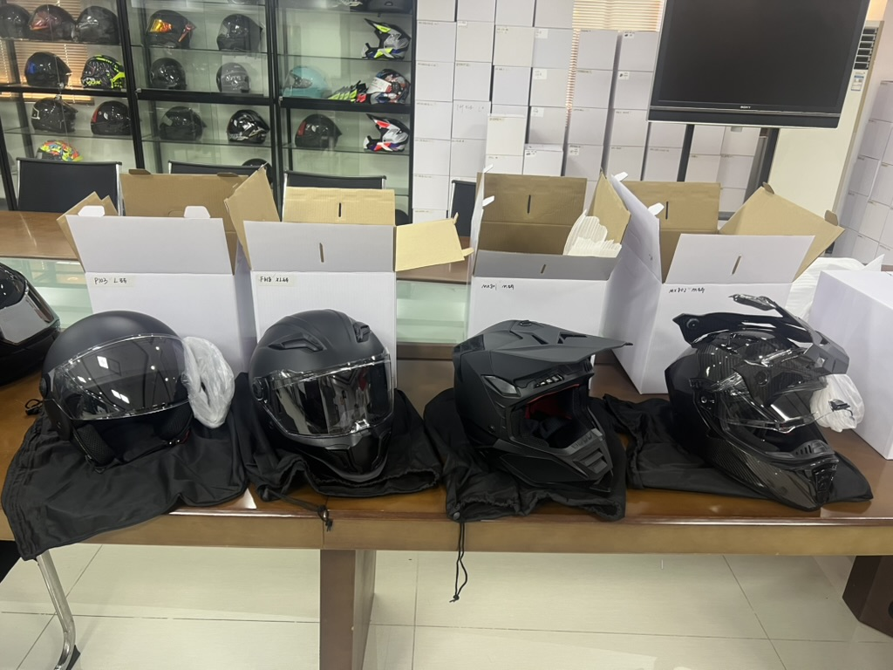

Taotao-owned sample photo for context. The pictured helmets do not establish the sizes, fit, supplier or certification of an order.
Your supplier sends a size chart and one comfortable medium helmet. The purchase order, however, contains several sizes. Can you approve the entire size run from that one sample? Not yet. The buyer's decision is whether the proposed size range is defined and checked well enough to release production—not whether the chart looks complete.
The U.S. National Highway Traffic Safety Administration advises riders to measure head circumference, compare it with the helmet maker's size chart and check for even pressure without uncomfortable hot spots or movement. That consumer guidance gives importers a useful question: how does each ordered size translate into a physical helmet that a rider can actually try? A chart alone cannot answer it.
Ask for a size-by-size evidence map
| Buyer evidence | What to match | Decision it supports |
|---|---|---|
| Current chart for the exact model | Size name, head-circumference range and revision/date | Which range the supplier is offering; not proof of fit |
| Physical sample of each ordered size, or a documented sampling plan | Size marking, interior fit components and sample identifier | Whether the approved reference really represents the ordered sizes |
| Order and labeling map | PO size, product size marking, carton size and destination-market records | Whether the same size identity survives production and packing |
Put the chart revision, sample ID and ordered size on one worksheet. Have intended users try representative samples according to the manufacturer's instructions; record head measurement, pressure points, helmet movement and any permitted pad configuration. Do not treat a buyer's informal try-on as laboratory testing or regulatory certification. If a size uses a different shell, liner or cheek-pad combination, ask the supplier to identify that configuration and explain how it is controlled in production.
For U.S.-bound motorcycle helmets, FMVSS No. 218 also requires a permanent, legible discrete-size label. That is a labeling requirement, not a substitute for a fit review or for evidence of compliance with the whole standard. A model-specific technical review remains separate.
Red flags and limits
- The chart has no model or revision, or its ranges change after sample approval.
- Only one size was sampled, while the order covers a broader range with unknown interior parts.
- Sample, carton and PO use different size names without a mapping.
- Pressure-point complaints are answered simply by changing to a larger labeled size, without checking shape or the intended configuration.
None of these observations alone proves a defective or noncompliant helmet. They identify what must be resolved before a purchasing commitment. A photograph of helmet interiors, including ours, cannot prove fit or certification.
Continue, pause or escalate
- Continue: the exact-model chart, ordered-size references, component map and size markings agree; fit feedback and any required technical evidence have been reviewed.
- Pause: a size or component combination lacks a traceable sample or written explanation. Request the missing reference before releasing that size.
- Escalate: a substantial mismatch between order, labels and physical samples remains, or a compliance question needs an independent specialist.
This is a sourcing decision tool, not a claim that Taotao has tested or approved any pictured model. Explore our helmets and visors category for product context. Primary sources: NHTSA helmet-fit guidance and 49 CFR § 571.218.